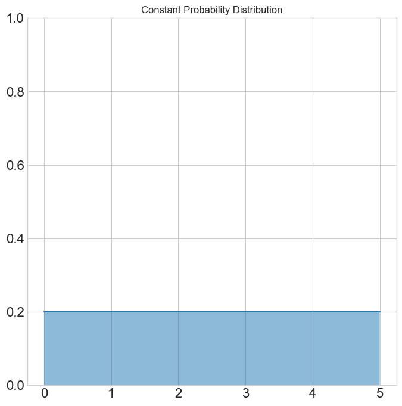

Jed Rembold
April 3, 2025
T when we fit Planck’s Law, for
instanceSuppose we wanted to evaluate the area under the curve \[ f(x) = -\frac{4}{5}x + 4 \] from \(x=0\) to \(x=5\), using Monte Carlo methods. This describes a triangle with height 4 and width 5, and thus should have an area of 20. Is that what we get?
What if we slightly complicate this function by looking instead at a piece-wise function: \[ f(x) = \begin{cases} 0 & x < 3; \\ -\frac{4}{5}x + 4 & 3 \leq x \leq 5; \\ 0 & x > 5 \end{cases} \] This now describes a triangle with height of 1.6 and width of 2, thus having an area of 1.6. Does the Monte Carlo method still work?

Trying to select from a continuous probability distribution discretely is not ideal, but that is all that is immediately available through Numpy
For a better option, roll your own selector:
def sample_from_prob_dist(pdf, lower, upper, num):
samples = []
while len(samples) < num:
x = np.random.uniform(lower, upper)
p = pdf(x)
if np.random.uniform(0,1) <= p:
samples.append(x)
return np.array(samples)Now suppose we wanted to evaluate the area under the same piece-wise function as earlier: \[ f(x) = \begin{cases} 0 & x < 3; \\ -\frac{4}{5}x + 4 & 3 \leq x \leq 5; \\ 0 & x > 5 \end{cases} \] But this time choosing points based on two different probability distributions: \[ {p(x) = \begin{cases} 0 & x < 3; \\ 0.5 & 3 \leq x \leq 5; \\ 0 & x > 5 \end{cases}}\qquad {p(x) = \begin{cases} 0 & x < 3; \\ \frac{1}{2}\left(x - 3\right) & 3 \leq x \leq 5; \\ 0 & x > 5 \end{cases}} \]